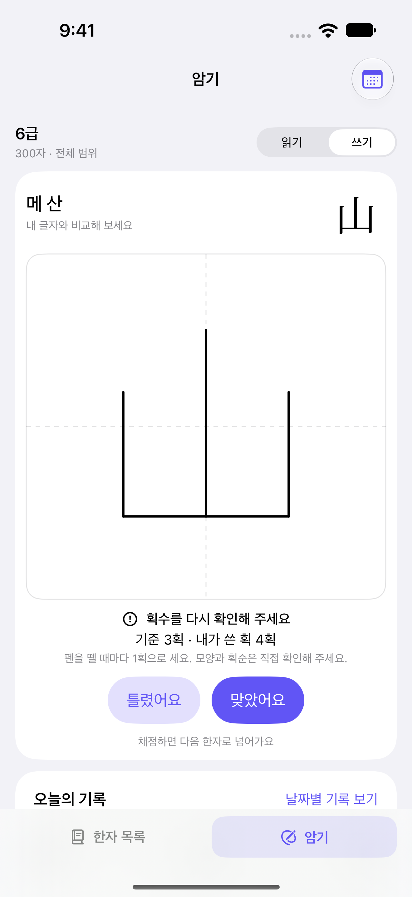
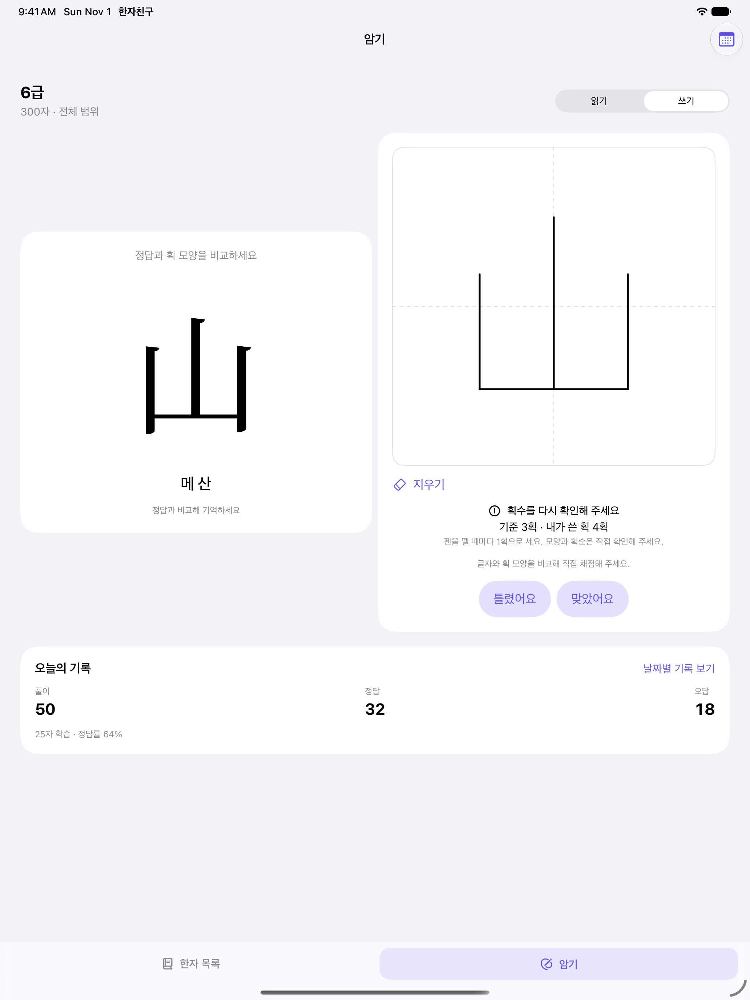
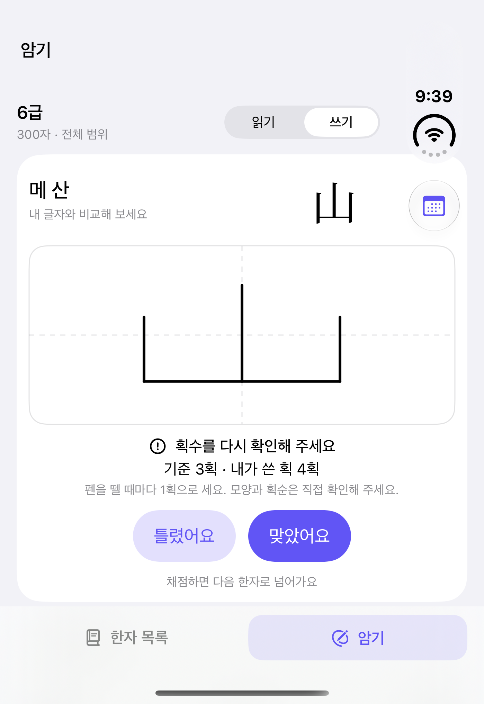
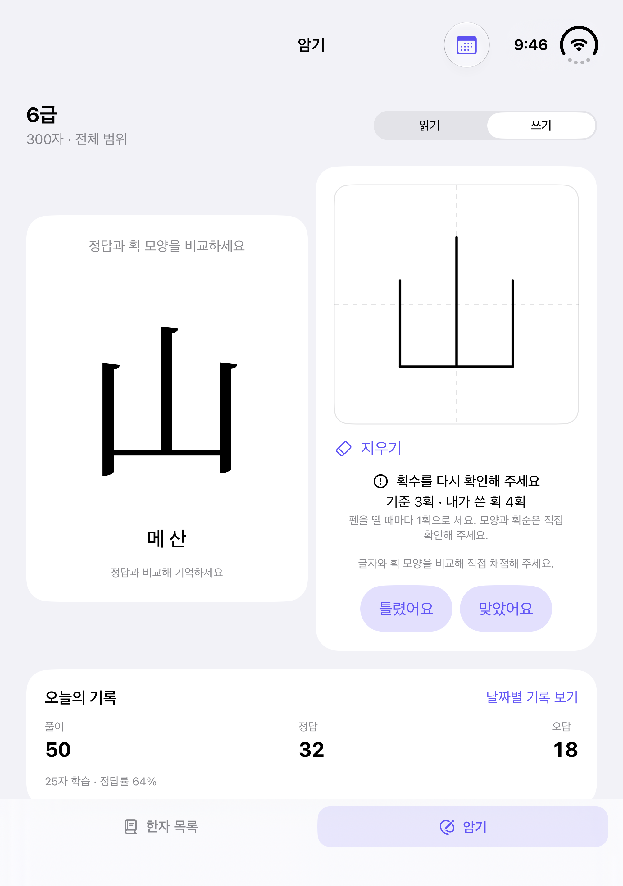
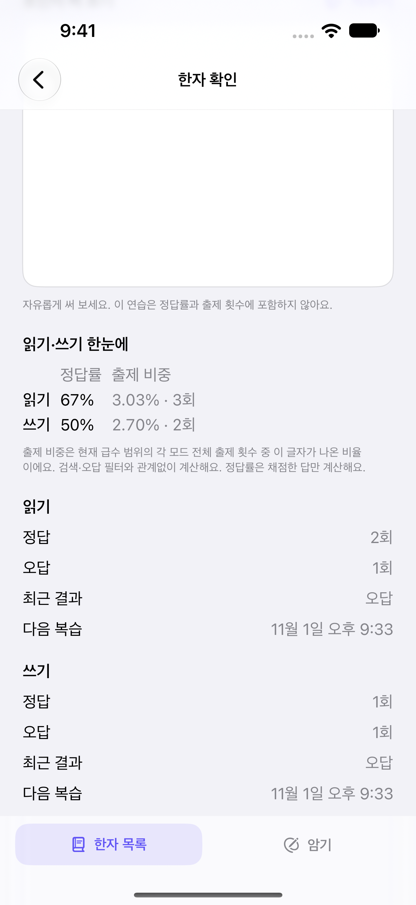

iPhone
쓰고, 비교하고, 바로 다음 한자로.
필기와 채점을 한 카드에
한자친구 · HANJA FRIEND
보고 베끼기 전에 떠올려 써 보세요.
읽고, 쓰고, 다시 만나는 한자.
복잡한 준비 없이 내 급수부터 시작해요.
iPhone · iPad · iPhone Duo / iOS·iPadOS 17 이상
Apple Pencil은 호환 iPad에서 사용할 수 있어요.

YOUR DEVICE, YOUR WAY.
작은 화면에서는 한곳에 모아서, 넓은 화면에서는 나란히 비교해요.
쓰고, 비교하고, 바로 다음 한자로.
필기와 채점을 한 카드에
넓게 쓰고, 좌우로 살펴보세요.

손가락 · 호환 Apple Pencil
접었을 때도, 펼쳤을 때도 자연스럽게.


왼쪽: 접은 화면 · 오른쪽: 펼친 화면
실제 앱 화면입니다. 학습 기록과 필기는 기능을 보여주기 위한 예시입니다.
RECALL, WRITE, REMEMBER.
쓰기는 훈과 음만 보고 시작해요. 다 썼다면 정답을 공개하고 내가 쓴 글씨와 비교하세요. 읽기에서는 한자를 보고 음을 입력해요.

A LITTLE CLEARER, EVERY DAY.
한자마다 읽기와 쓰기의 정답률, 출제 비중, 횟수를 나란히 확인해요. 틀린 한자를 모아 연습하고, 적게 본 글자도 고르게 만나요.
여기 보이는 이미지는 실제 앱 화면이며, 학습 기록은 기능을 보여주기 위한 예시예요.
GOOD TO KNOW.
한국어문회 시험에는 음을 적는 독음과 뜻·음을 함께 적는 훈음 등 여러 유형이 있어요. 뜻과 음을 함께 익히고, 공식 시험 안내와 교재도 확인해 주세요.
아니요. 정답을 공개한 뒤 글자 모양을 직접 비교해 채점해요. 자동 필기 인식이나 획순 채점은 제공하지 않아요.
앱은 선택한 급수의 전체 한자를 쓰기로 연습해요. 실제 시험의 쓰기 배정 범위와 다를 수 있으니 공식 자료를 함께 확인해 주세요. 한자친구는 한국어문회의 공식 앱이 아니에요.
학습 기록은 기기에 보관하고, 같은 iCloud 계정의 기기 사이에서는 CloudKit으로 이어갈 수 있어요. 동기화는 계정·네트워크·시스템 설정에 따라 달라져요. 읽기·쓰기 출제와 채점 결과를 따로 기록하고, 손으로 쓴 필기 이미지는 저장하지 않아요.
사용 중 불편한 점이나 한자 표기 문의를 보내주세요.
지원 문의 ↗